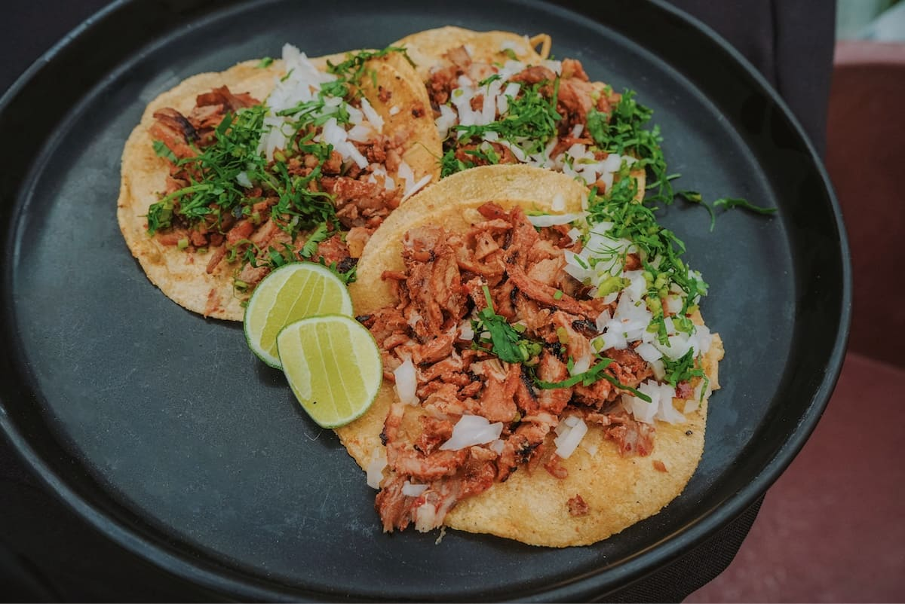

La gastronomía mexicana es mucho más que comida
Es historia, tradición y cultura servidas en cada plato. Desde las recetas que han pasado de generación en generación hasta los sabores que encontramos en las calles, cada platillo tiene algo que contar.
En Sabores de México te invitamos a descubrir la riqueza de nuestra cocina, sus ingredientes, sus orígenes y las tradiciones que hacen de ella una de las más reconocidas del mundo.

Un país, miles de sabores
México es un país de contrastes, y su gastronomía no es la excepción. Cada región tiene sus propias especialidades, técnicas e ingredientes que reflejan su identidad.
En este recorrido conoceremos algunos de nuestros platillos favoritos, como la birria de res, llena de tradición y sabor, y los chilaquiles, un clásico de los desayunos mexicanos.
Porque detrás de cada receta hay una historia que vale la pena conocer.
Platillos que cuentan historias
Descubre algunos de los sabores más representativos de México.


Pozole

Chile en Nogada

Cóctel de camarón

Tacos de carne asada